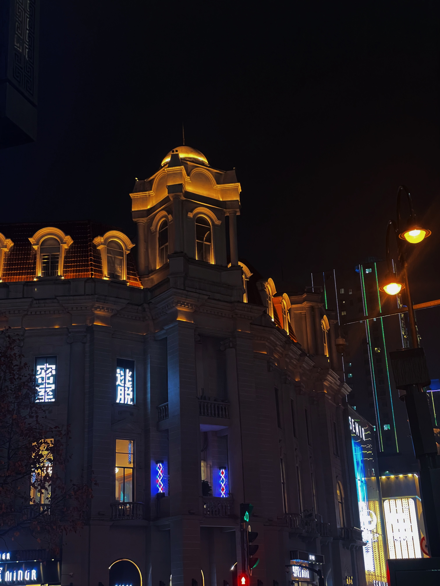
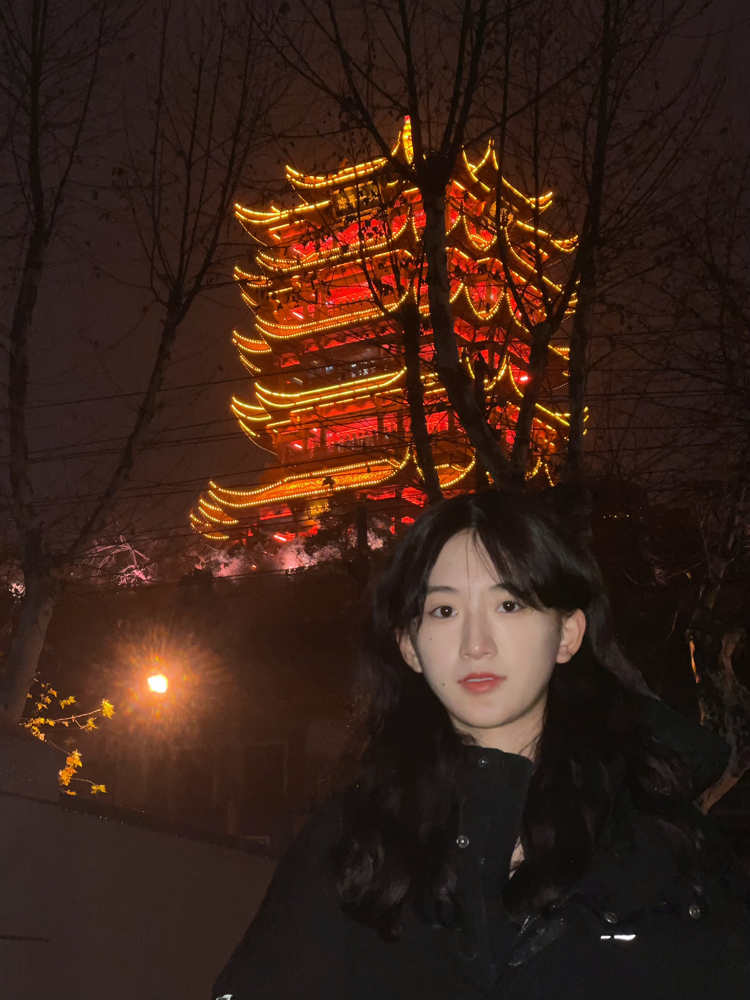
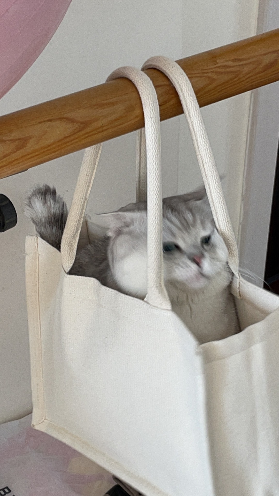
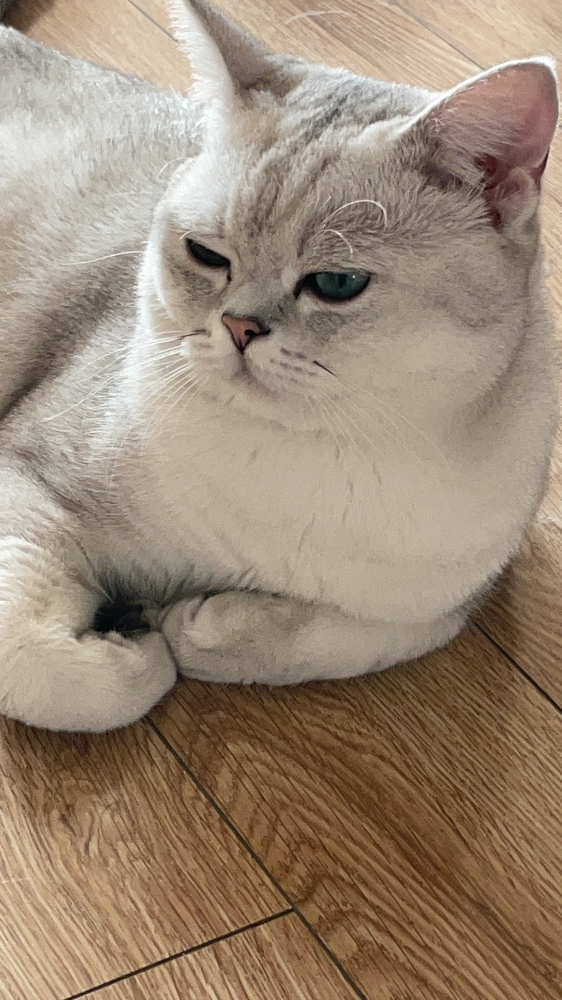
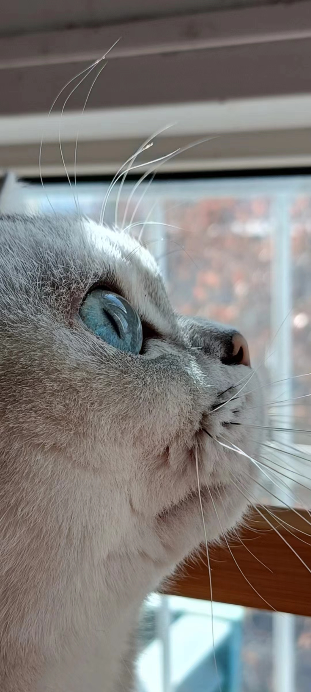

·动漫
我喜欢动漫世界，在平时会追番，有时候会去漫展。这是我最喜欢的动漫
·旅行
我喜欢摄影和旅行，喜欢在假期去各个地方看看不一样的风光
例如武汉：武汉市，简称“汉”，别称江城，是湖北省辖地级市，省会、副省级市、特大城市、国家中心城市，是国务院批复确定的中国中部地区中心城市，全国重要的工业基地、科教基地和综合交通枢纽
例如三亚：三亚市，是海南省辖地级市，别称鹿城，地处海南岛的最南端，介于北纬18°09′34″~18°37′27″、东经108°56′30″~109°48′28″之间
·猫咪
喜欢猫咪，家里有养一只英短叫奶糕～它的脾气很好，对人也会非常亲近
英短猫，体形圆胖，四肢粗短发达，被毛短而密，头大脸圆，温柔平静，对人友善，极易饲养。在英国本地很早就获得认可，1901年，还出现其猫种之理想形象。它原是一种体型相当大又结实的蓝猫，过了1970年，毛色和外型都开始改变。体型越来越小，毛色的种类也变得丰富，所有的改变都朝向优雅的风格。英短银渐层是英短的一个分支，在国际上非常受欢迎。
  